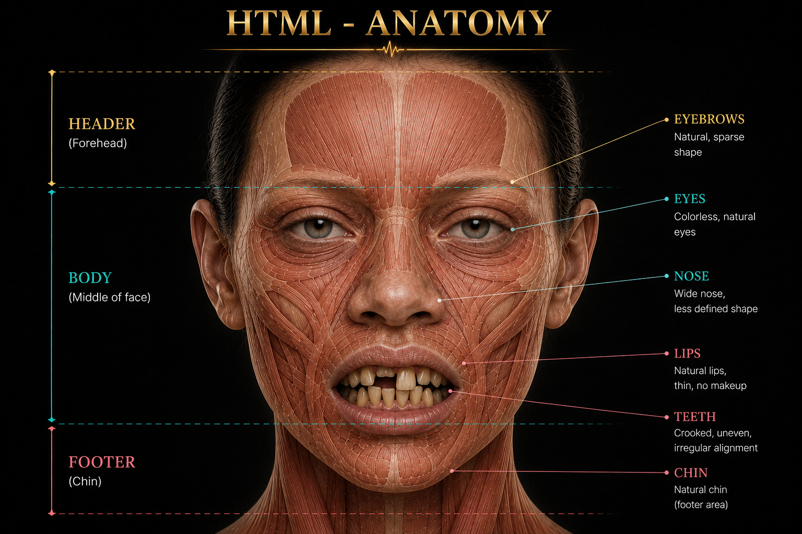
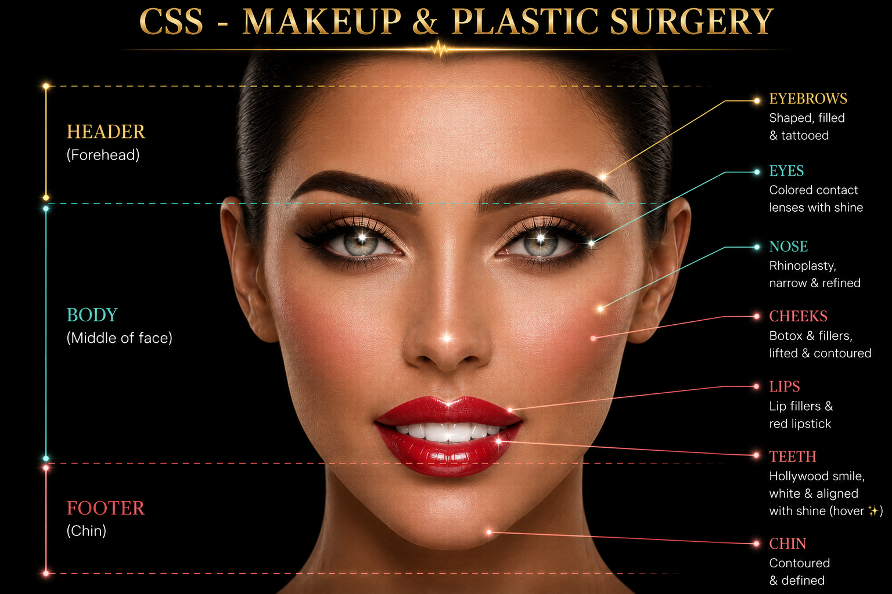
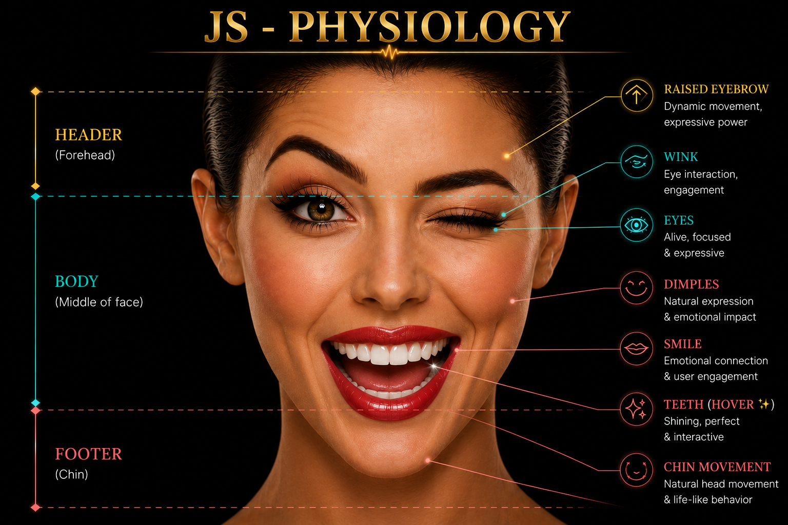

WHEN WEB
TECHNOLOGIES
SPEAK MEDICINE
Where my medical background meets the language of software engineering.
HTML — Anatomy
HTML defines the structure before styling or behaviour is added.
My medical background made this concept immediately familiar. Anatomy defines structure, location, and the relationship between parts. HTML does something remarkably similar by organising the elements that form a webpage.
HTML does not decide whether the face is glamorous. It makes sure there is a face to begin with. 😄

CSS — Makeup & Plastic Surgery
The structure stays. The appearance transforms.
Once the structure exists, CSS takes over the visual layer. It controls the page background, colours, layout, spacing, proportions, alignment, effects, hover states, and responsive presentation — transforming the same HTML anatomy without changing its underlying structure.
CSS is not simply decoration. It is where visual design meets engineering.

JavaScript — Physiology
Now the styled structure begins to respond.
Anatomy tells us what structures exist. Physiology explains how they function and respond. JavaScript plays that role on the web by adding behaviour, events, movement, dynamic updates, and interaction.
The face is no longer static — it moves, responds, and communicates. Likewise, JavaScript transforms a webpage from something you view into something that responds to you.

FROM MEDICAL SCIENCE TO SOFTWARE ENGINEERING
My transition into software engineering did not require leaving my medical way of thinking behind. I began using familiar ideas — structure, appearance, function, systems, and response — as a practical lens for understanding web technologies and building my own professional website from the first day of the module.
Medicine taught me to understand structure and function. Software engineering gave me a new language to build with them.